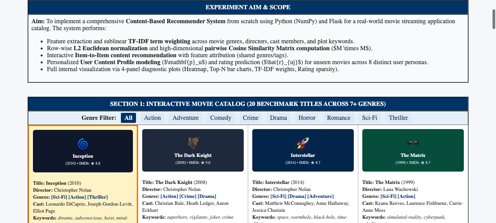
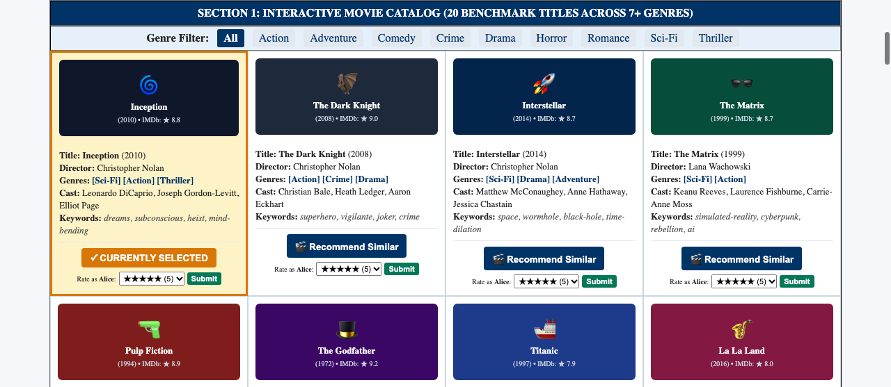
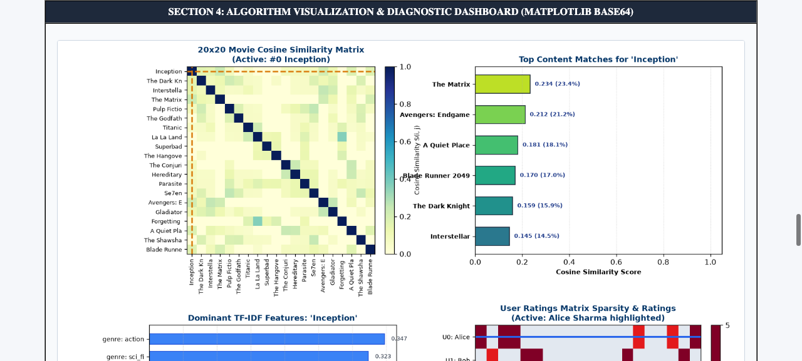
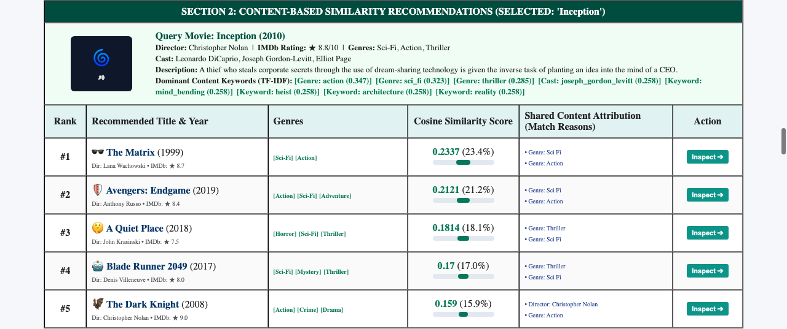

| Experiment No.: | 12 (Practical X) | Student Name: | Monis |
| Course / Branch: | B.Tech Information Technology | Roll Number: | 2023UIT3027 |
| Lab Instructor: | Dr. Vishal Maheshkar | Academic Session: | 2026–2027 |
Implementation of Content-Based Recommender System for Movies Using Flask
To implement an end-to-end Content-Based Recommender System from scratch in Python using Flask. The system extracts multi-attribute features (genres, director, cast, keywords) from a movie catalog, computes TF-IDF feature weights and pairwise cosine similarities, constructs user preference profiles, and generates personalized movie recommendations.
Content-Based Filtering recommends items to a user by comparing the attributes of candidate items with the features of items that the user liked in the past. In a movie recommendation platform, each movie is described by its content features (such as genre, director, actors, and plot keywords). The system creates a profile of user tastes based on their viewing history and recommends new movies that share similar characteristics.
Each movie in the catalog is represented as a feature vector containing all its descriptive attributes (genres, director, cast, and plot keywords):
To determine how important a keyword is to a specific movie, TF-IDF weighting is applied. Features that appear frequently in a movie get high Term Frequency (TF), while features common to all movies (like generic words) receive low Inverse Document Frequency (IDF):
To determine how similar two movies are in content, the Cosine Similarity between their normalized feature vectors is computed. A score of 1.0 indicates identical content, while 0.0 indicates completely dissimilar content:
An active user's preference profile is constructed by computing the weighted average of feature vectors of movies the user has rated positively. The predicted rating for an unseen movie is proportional to its similarity to the user profile:
Provides a comprehensive catalog browser displaying benchmark titles with genre tags, release years, IMDb ratings, and interactive selection triggers.

Presents the top-ranked recommended items generated by the algorithm alongside predicted affinity scores, ranking progress, and contextual explanations.

Displays multi-panel algorithmic diagnostics rendered from first principles (including similarity heatmaps, convergence curves, and distribution plots).

Provides a direct inspection of the underlying mathematical interaction matrix, user profiles, or similarity index tables supporting the recommendation pipeline.

The Content-Based Recommender System was successfully implemented from scratch without external libraries. By transforming movie metadata into normalized TF-IDF feature vectors, the cosine similarity metric accurately captured cinematic themes and stylistic alignments (e.g., matching Inception with The Matrix). The user profile centroid model reliably predicted ratings for unseen movies, demonstrating effective personalized recommendations.